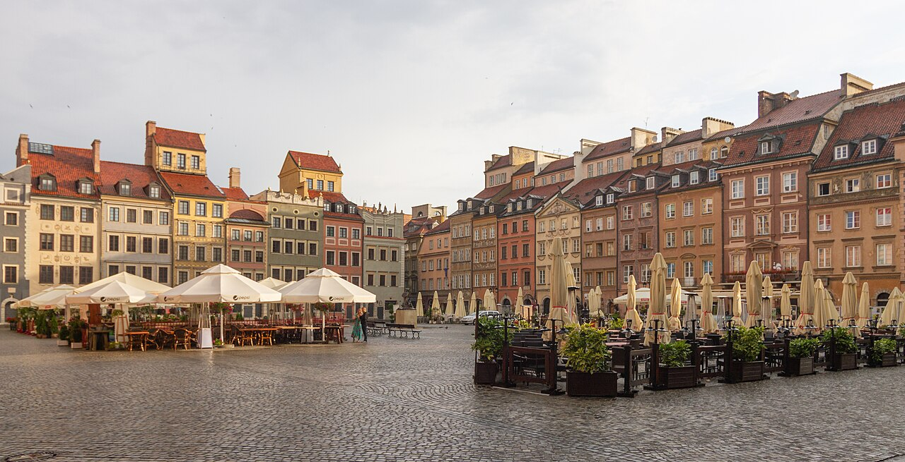

Варшава

Коротка характеристика
Варшава — столиця і найбільше місто Польщі, розташоване на річці Вісла. Під час Другої світової війни місто було зруйноване більш ніж на 80 відсотків, але його відбудували, зокрема історичне Старе місто. Сьогодні це великий діловий і культурний центр Центральної Європи.
Чому я обрав це місто
Варшава показує, що місто можна підняти навіть з руїн. Тут відновлене Старе місто сусідить із сучасними хмарочосами, а саме місто близьке українцям і за культурою, і за відстанню.
Цікаві факти
- Відбудоване Старе місто внесене до Списку всесвітньої спадщини ЮНЕСКО в 1980 році.
- Символ Варшави — Русалка (Сиренка), її статуя стоїть на Ринковій площі.
- У Варшаві виріс композитор Фридерик Шопен, його серце зберігається в костелі Святого Хреста.
- Палац культури і науки збудували в 1955 році як «подарунок» від СРСР.
Визначні місця
- Старе місто і Ринкова площа
- Королівський замок
- Парк Лазенки
- Палац культури і науки
- Музей Варшавського повстання
- Вілянувський палац
Моя оцінка
8 з 10